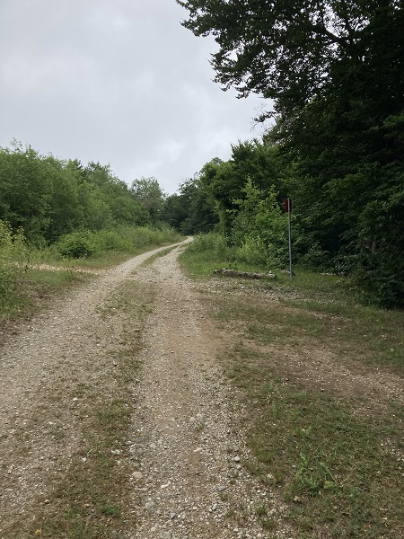
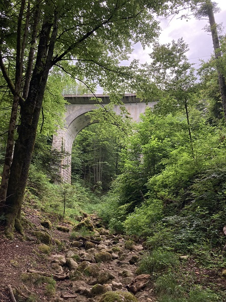
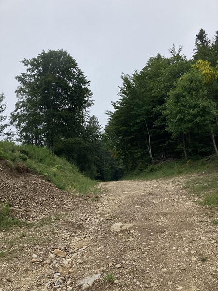

Spooky Places Section
I'm a big fan of scary stuff. This page discusses some places with a creepy past, scary encounters, a lot of local history (in fact this page is like an extension of the historical portal for places which are both a little bit mystical or mysterious but also are filled with history, sections of course divided by theme for ease of access to information). This page is mostly made for fun, but it does have some insights for people willing to find out more about history and also to get a bit of a fright in the end. I've released this page in honor of Halloween 2022. Please note that this section is far from being completed. Thank you for your understanding.
Table of contents
Paranormal Locations
The Ruins of Nôtre Dame d'Oujon and its surroundings
History
An elevation map of the Maison Haute and its surroundings using the multidirectional hillshade feature. Courtesy of map.geo.admin.ch / Swisstopo, text added by Max.
Geographical Situation and Paranormal Objects
The discussed region spans a large area, its pièce de résistance being the ruins of the Maison Haute (1040m), denoted as the archeological region 223/302. This is the place where the actual monastery is located. Unfortunately, due to the Jura's harsh weather, particularly in the winter, most of the Ruins are buried for preservation. There is an outside wall of stones surrounding this site. The best way of accessing it is the spiritual path, which starts in a depression in the ground called the Creux des Abériaux (~1000m). The Maison Haute has several paths leading to it, one eventually joining up the Route des Montagnes (Northwest) eventually leading up to Mont Pelé, Mont Sâla, and le Noirmont passing by farms and creepy trees (Greater Northwestern Arzier Paranormal Region), while the other (North) can lead you to the Crêt de la Neuve, passing by the Bois d'Oujon, and then going further into the Jura (Jura Crest Trail / Path n°5). This northern area remains mostly unexplored although there are archeological zones reported in the area (regions 224/305 & 223/305). Going East will lead you back to Arzier, along the spiritual path and then the alley of the creepy trees, passing by the Pierre d'Oujon (a glacial erratic that was moved a couple centimeters from its original spot), Le Molard, at 1043m. A provisional path will then guide you down to civilization. Lastly, going southwards you will be able to access the Conriéry and Azogats barns/farms in one direction, the Montana Tree leading to the Violettaz farm in another direction. Between these two is the Maison Basse (1020m-1040m). As of the time of writing, no expedition to the Maison Basse has been made. The Maison Basse is the industrious component of the Oujon site, with, among other installations, a chapel, a watermill, and a woodcutting place.
The Monk's Path
Several itineraries lead to Oujon. The best one, however, is what I call the Monk's Path. It was an itinerary I designed myself, although there's no doubt it had been used beforehand by other hikers. For the best experience, you should hike on a cloudy and/or foggy day or the descriptions won't match this as well. This trip is describable in several phases.
Phase I - Beginning
The path starts at the Sus-Châtel train station in Genolier, follow the path until you eventually reach the gates that let the cars pass when there isn't a train. When you stand there, on your right should be Archeological Region 239/301, where was found an old Necropolis from the Middle Ages Google Search Link for more info. From there, take a left up the road, eventually reaching the woods. Although you can take the middle path, which can lead you to the Pierre de Genolier and a water tank, coming back onto the normal path, you should take the leftmost path. You can now start playing the Oujon Playlist, linked below in the gallery. You will then follow a set of small trails intersecting with larger pathways, which will then place you on a more important pathway. From there, about fifty meters on your left you will reach the intersection of height 843.
Phase II - Unsettling
This follows the "Barillette-Bike Path (number 993)" This area has a slightly different vibe than the "tunnel of vegetation" that led you here. As you get closer to the Ruins, the feeling gets creepier. Whereas before the "tunnel" was slightly unsettling especially with the music and weather, this begins getting more weird. The vegetation isn't as high anymore, and there is an open gray sky right above you. Some really small paths to your left will lead to la Chèvrerie. There will be a campfire and the start of a stream that leads God knows where on your right. Follow the path, which at one point dives into the valley, and will bring you to the trail leading to the NSTCM Train Bridge, marked by a yellow "Tourisme Pédestre" sign giving you directions, leading into a much darker portion of woods with coniferous trees.
Phase III - Creepy
You will once again be back on small trails. Follow them until the road splits. You can either go over the rails, first passing a dressed up bear statue deeper in the woods off your path (approximate location: 46.45354, 6.19148) (as a warning: be sure to be on high alert as trains can pass by at any time, I wouldn't recommend you taking that path at all, be safe), after which you should be back on the main path. The more recommended trail is the larger one on your right, following up the Oujon stream. It is then that you reach a crossroads, the bridge in front of you, and the possibility to cross the stream to reach Arzier if you would like to, or passing over the rails, taking up a steep path to then eventually be back on the trail to the Ruins. The recommendation from here is to go under the bridge, eventually taking a path on your left, where you will join up where crossing the rails would have brought you originally. You have now left the Côtes de Genolier and "Les Allévays" regions, going into the "Bois Noir" or dark woods.
Phase IV - Alone
You are now on the trail toward la Chèvrerie, passing far above the tracks, leading you to a clearer area with a dirt hill. You can choose to take the path on your right up to the Ruins, or go staight ahead until you reach la Chèvrerie which is a nice place to visit. Once you have visited the place, you can come back to the same place and keep going, until you have the path bring you to Route d'Arzier.
Phase V - Entering
Either take the risk of going on private property, or follow the main road down. In any case, you will pass by the Maison Basse, the ruins of which are very well hidden, only really visible with the hillshade layer on a map. Follow the farm road which will eventually split in two, one leading you into the Oujon Woods, the other to the Montana Tree. Let's assume you continue the path into the woods.
Phase VI - Spiritual Contact
You are now in the woods. You will cross at least one farm passage, and you will then be confronted with the first tree with a face painted on it. The tree you’ll see has a distinct grin on it with thinner eyes. Depending on if you took the path with the private property sign to see the Maison Basse this might not be the first creepy tree you’ve seen. The creepy trees are a mystery of their own, as is discussed in this section. I now highly encourage you to go down all they way to the start of the spiritual path and then follow the information signs. When going down you will pass by the Pierre d’Oujon which has been moved around a meter to the left for some reason, you can still see the print of where it was in the ground. From the start of the spiritual path keep following the signs until you reach the Ruins. If you started around 09:30 a bit later even you should now have reached the Maison Haute and Sign n°4 a bit after noon. Have a nice picnic there, and you will be ready for Phase VII.
Phase VII - Getting away from the terror
You will now start walking back. You will see the remaining 8 signs, eventually passing back by the path you took to get to the spiritual path. From there, you will cross this small stone wall and gate, passing by a memorial stone of the 1789 revolution against the Bern occupation, the same occupation that contributed to bringing Oujon down. Creepy trees will multiply, keep going past Le Molard, and you will take a road down. Eventually a small pathway will open up on the left, you can then turn right, passing under a small bridge, out of the woods in one piece, reaching Arzier.
Phase I - Taken at the Bas des Côtes de Genolier. Source: Max, date: 01/06/2022.
Phase II - The bike path with sparse vegetation. Source: Max, date: 01/06/2022.
Phase III - The NSTCM Railway Bridge and the Dried Up Oujon River. Source: Max, date: 01/06/2022.
Phase IV - The road leading up to la Chèvrerie with the dirt hill on the side. Source: Max, date: 01/06/2022.

Phase VII - A tree with the memorial stone of the 1789 revolution. Source: Max, date: 09/01/2021.
Paranormal Occurences
Oujon I - August 17th 2020
The first hike to Oujon. Got a bit lost, got to the bridge, went over it. Reached the Montana Tree. This seems to have been the event that started the haunting experience. The first tree (A77b) was then found after the gate. The ruins were then reached. After this
Oujon II and visit by Oujon - October 2020
During Oujon II, there was a much lower number of trees than the pass by hike a couple days later. The ruins on the pass by hike were approached from the north, following the Route des Montagnes. It was in the area of the Marais Rouge that some creepy trees were also found. Oujon II accomplished with Dev. Pass by hike accomplished with Yian, Marlon, and Maddox.
Oujon V - December 2021
When walking on the dirt path after the road leading to La Conriéry towards the ruins (Montana Area), a cloud of fog roughly 5m x 5m x 5m flew toward us as if it was attacking us. It then raced further into the valley to not be seen again. Hike accomplished with Emma.
Oujon VI - June 1st 2022
First proper use of the Monk's path. Cloudy day with light fog. Not a single person was seen until the walk back to Arzier, except, as was claimed, the train conductor when stopping by La Chèvrerie. Upon reviewing of a video recorded of this train, no train conductor was spotted inside. Hike accomplished with Zac.